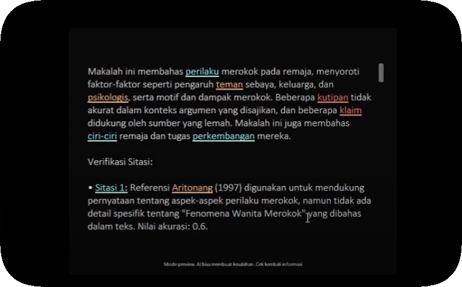
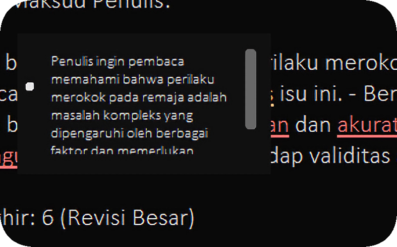
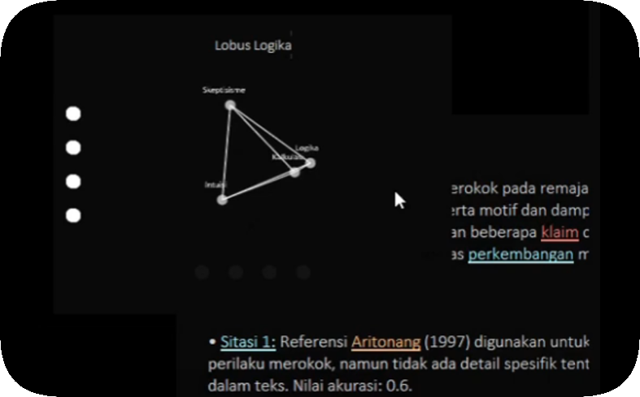

Sitasi AI
Software Analisis Kejujuran Penggunaan Sitasi Paper
Fitur-Fitur
• Analisis Kontekstual Multi-Lapis
Menganalisis penggunaan sitasi dari lapisan analisis kontekstual berbeda.
• Fitur "Renungan"
AI menempatkan pikiran dalam pada poin‑poin yang dianggap signifikan dari analisis paper.
• Fitur "Informasi Sitasi"
Menampilkan informasi dasar dari sitasi dan akses ke halaman Google Scholar dari sitasi.
• Fitur "Interaksi dengan AI"
Berinteraksi langsung dengan AI untuk mendiskusikan mengenai data paper yang dianalisis.
• Fitur "Interaksi Multi‑Korteks"
Berinteraksi dengan 17 unit korteks otak AI untuk mendiskusikan mengenai hasil analisis yang dilakukan.
Sitasi AI